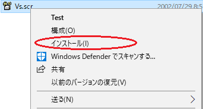
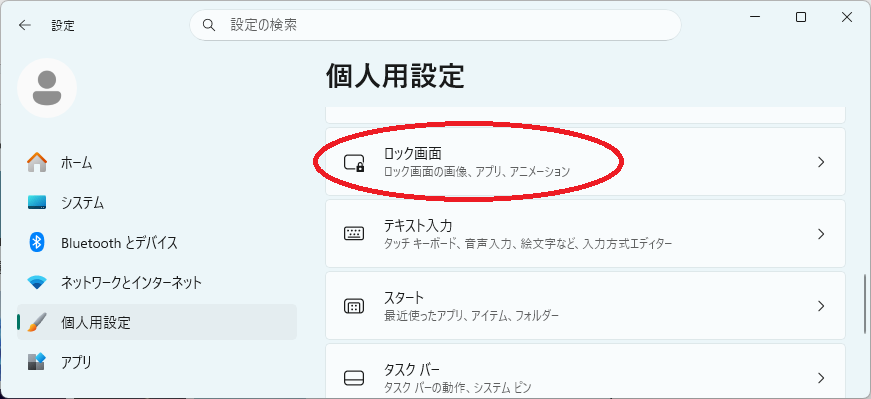
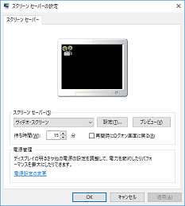
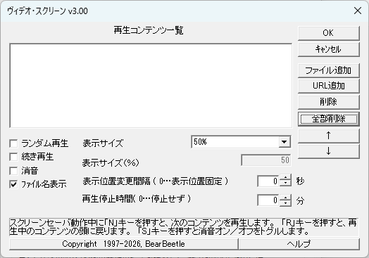
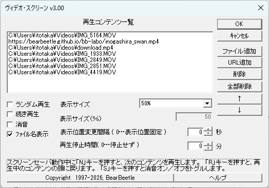
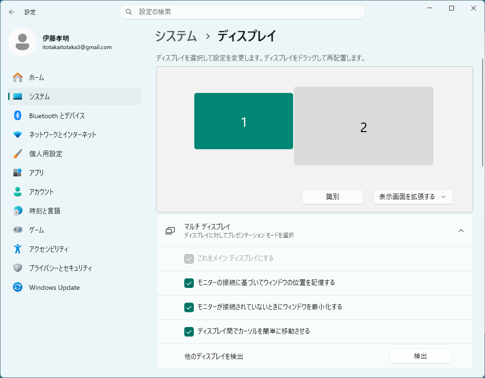

１．はじめに
「ヴィデオ・スクリーン」は、動画を表示するスクリーンセーバーです。スクリーンセーバーが起動すると、登録してある動画を次々と再生します。また、定期的に表示位置が変化します。
「ヴィデオ・スクリーン」は、MITライセンスに基づくオープンソースソフトウェア（OSS）です。GitHubにてソースコードを公開しており、自由なカスタマイズや再配布が可能です。
「ヴィデオ・スクリーン」は、以下の特長があります。
- Windows Media Playerで再生可能な幅広い動画フォーマットに対応
- マルチモニター対応
複雑なディスプレイ設定（拡張画面など）でも自動的にメインディスプレイを正確に検出し、サブディスプレイを黒く塗りつぶしてメイン画面のみで動画を再生します。 - 柔軟な再生オプション:
ランダム再生、続き再生（レジューム機能）、消音設定などをサポート。 - 焼き付き防止
動画の表示位置が定期的に変化します。表示サイズも任意に設定可能です。 - キーボード操作
スクリーンセーバー起動中に動画再生に関するキー操作が可能です
対応動画
「ヴィデオ・スクリーン」で再生可能な動画は、システム依存になります。
Windows Media Playerで再生可能な動画が再生できます。
対応OS
Windows11
※Windows10以前は未確認です
制作・著作
BearBeetle（べあ・びーとる）
URL:https://bearbeetle.github.io/bb-labo/
免責
【免責事項】
本ソフトウェアは「MITライセンス」の下でオープンソースとして公開されています。
ライセンスの規定に基づき、本ソフトウェアは「現状有姿（そのままの状態）」で無保証にて提供されます。本ソフトウェアを使用したことによって生じたいかなる損害（データの損失、パソコンの不具合など）についても、作者は一切の責任を負いません。ご自身の責任においてご利用ください。
（※本記載は、一般ユーザーの皆様に向けてMITライセンスの免責条項をわかりやすく要約したものであり、正式なMITライセンス本文と矛盾・競合するものではありません。法的な詳細および利用条件については、GitHubリポジトリ内の LICENSE ファイルをご確認ください。）
注意事項
- V2.xx以前とは、設定に互換性がありません（設定を引き継げません）
- サスペンド及びスタンバイには対応していません。ロックすることがあります。
スタンバイまでに予め動画再生を停止させるように設定すれば、ロックを回避することも出来ます(v1.70より)
２．インストール／アンインストール
インストール
- 任意のフォルダーにVS.SCRをコピーして下さい。
- VS.SCRを右クリックして、「インストール」を選択して下さい。

アンインストール
- インストールしたフォルダーから、VS.SCRを削除してください。
※完全なアンインストールを行いたい場合は、以下のフォルダー以下をすべて削除してください。
C:¥Users¥XXX¥AppData¥Local¥BearBeetle
３．設定
【補足】※「動画コンテンツ」は、「動画ファイル」と同じ意味です。
- スクリーンセーバー設定画面を表示する
※Windowsのバージョンによって異なります。
例１：コントロールパネルから、「画面」を起動し「ｽｸﾘｰﾝｾｰﾊﾞｰ」を選択する
例２：デスクトップで右クリック→「個人用設定」→「ロック画面」→（関連設定）「スクリーンセーバー」

- 「スクリーンセーバー(S)」に「ヴィデオ・スクリーン」を選択する。

- 「設定（T)...」をクリックして下さい。
すると、「ヴィデオ・スクリーン」というダイアログが表示されます。
このとき、「再生コンテンツ一覧」にはなにも登録されていません。

- 「ファイル追加」または「URL追加」をクリックして、登録したい動画ファイルを指定して下さい。
- 「ファイル追加」において、シフトキー又はコントロールキーを押しながら、選択すると、複数のファイルを一度に選択できます。
- 「URL追加」は、インターネット上の動画ファイルを再生する場合に使用します。
ただしYouTubeなどファイル指定しない形式のものは再生できません。

- 「 再生コンテンツ一覧」の登録を削除したい場合は、その項目を選択後、「削除」をクリックして下さい。
- 「 再生コンテンツ一覧」の登録を全部削除したい場合は、その項目を選択後、「全部削除」をクリックして下さい。
- 「再生コンテンツ一覧」から項目を選んで「↑」をクリックすると、１行上に移動します。
また、「↓」をクリックすると、１行下に移動します。 - 「ランダム再生」をチェックすると、再生順番がランダムになります。
- ２回続けて同じコンテンツを再生する場合もあります。
- 「続き再生」をチェックすると、スクリーンセーバ起動時に、前回の続きから再生するようになります。
- 「消音」をチェックすると、動画再生中（スクリーンセーバ起動中）だけ音を消します。
- 「ファイル名表示」をチェックすると、動画再生中（スクリーンセーバ起動中）に、そのファイル名を画面上部に表示します。
- 「表示サイズ」により、元サイズの半分，１倍，２倍，３倍に設定することができます。
また、「表示サイズ」を「指定」にすると、「表示サイズ(%)」で表示倍率をリニアに設定できます。 - 「表示位置変更間隔」は、動画表示位置の変更間隔を１～６００秒の間で設定することができます。
- ０秒を指定すると、動画表示位置が中心に固定されます。
- 「再生停止時間」は、動画再生を終了させるまでの間隔を１～６００分の間で設定することが出来ます。
- ０分を指定すると、動画再生はスクリーンセーバが終了するまで終了しません。
- ヴィデオ・スクリーンは「サスペンド」や「ディスプレイの省電力機能」を有効にする場合は、必ず電源OFF前に動画表示を終了させるように設定してください。
- 「OK」をクリックすると、設定が反映されます。
- 表示範囲の制限（高度な設定）
C:¥Users¥XXX¥AppData¥Local¥BearBeetle¥VS2¥VS2.INI
青字の部分(640/480)に制限する幅／高さの値を入れて下さい。SCREEN_WIDTH=640
SCREEN_HEIGHT=480
４．スクリーンセーバ動作中の操作
- キーボードの「N」キーを押すと、直ちに次の動画コンテンツの再生に移ります。
- キーボードの「R」キーを押すと、再生中の動画コンテンツの頭に戻ります。
- 「S」キーを押すと、消音ONと消音OFFをトグルします。ただし、このときの状態は設定に反映されません。
※その他のキーを押すと、スクリーンセーバは終了します。
[先頭に戻る]５．マルチモニター対応
複数のモニター（ディスプレイ）環境に於いて、以下の手順で動画表示するディスプレイを設定することができます。
- デスクトップ画面で、「ディスプレイ設定(D)」をクリックするとディスプレイの設定画面が表示されます。
- 動画を表示したいディスプレイの番号を選択してください（緑色になります）。
- 「マルチディスプレイ」をクリックして、「これをメインディスプレイにする」をチェックしてください（チェック後グレーになります）。

[先頭に戻る]６．その他／変更履歴
その他
- ソースコードは、GitHubリポジトリから入手できます。
- 「例外」や「不正な処理」については、ディスプレイドライバやマルチメディアドライバの不具合です。ドライバーの更新などでも、改善しない場合は、「ヴィデオ・スクリーン」の使用をやめることをお勧めします。
変更履歴
V.1.0（'97/8/28）
・リリース
v.1.1 ('97/10/16)
・登録順序を変更可能に変更
（リストボックスのソートを廃止）
v.1.2 ('97/11/22)
・「N」「R」キーによるコントロール追加
・ランダム再生機能追加
・ヘルプファイル追加
v.1.21('97/12/30)
・コンテンツ指定パス内に、スペースが入っている場合、再生できない不具合を修正。
v.1.22('98/1/15)
・HELPファイル修正（Win95でのMOV再生は、QTW16を使用すること）。
v.1.3('98/3/11)
・画面サイズ設定機能追加
・コンテンツ一覧編集機能追加
・消音機能追加
・表示位置変更間隔設定機能追加
v.1.31('98/4/5)
・バグ修正（ファイル名に、「ポ」が入ると、字化けがおこる）
・表示位置変更間隔の最小値を１０秒から２秒へ変更
v.1.40('98/7/1)
・表示サイズに「指定」を追加（リニアな表示サイズの設定可能）
v.1.50('98/9/19)
・再生ルーチンを見直し
・「続き再生」機能追加
・表示位置固定機能追加
v.1.60('99/2/13)
・「↓」ボタン無反応バグ(v.1.50)修正
・タイトル表示モード追加
v.1.61('99/6/6)
・MPEG消音NG対策
・動作安定化（ActiveMovie優先処理に変更）
・エラーメッセージ表示
v.1.62('99/6/xx)
・キーボード入力を必ず受け付けるよう修正
v1.63(2000/03/03)
・動作安定化
v1.70(2000/05/06)
・「再生停止時間」追加
v1.71(2000/09/03)
・動作安定化（MCIの状態変化中はスクリーンセーバを終了させない）
・「再生停止時間」バグ修正
・キーボード入力「S」で消音ON/OFFをトグルする機能を追加
v.1.72(2001/06/30)
・フルスクリーン指定時でもアスペクト比を守るように修正
・表示範囲制限機能追加
v.1.73(2002/08/xx)
・全部削除追加
※窓の杜で紹介されました
v.2.00(2018/05/26)
・Windows10対応
・設定ファイルをユーザ毎の設定に変更
（v.1.73以前と設定ファイル互換性なし）
V.3.00(2026/03/xx)
・Windows11対応
・動画APIをMCIからMFPlayに変更
・マルチモニター対応
・OSS化
・英語対応
[先頭に戻る]